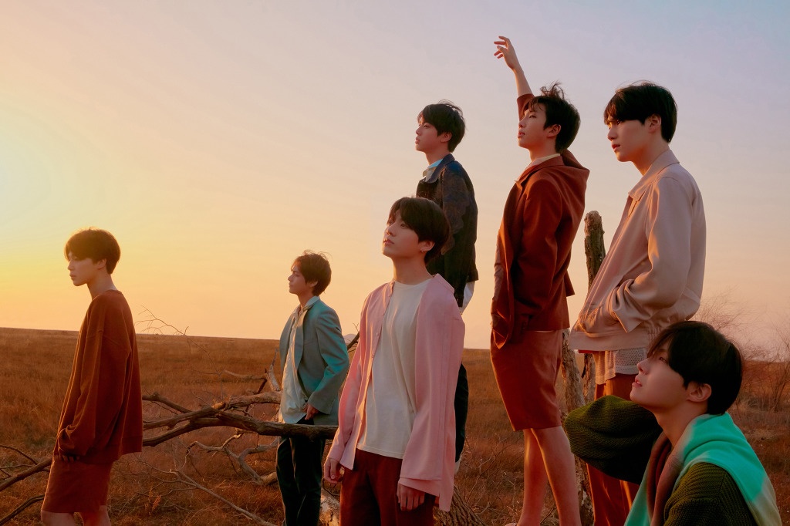
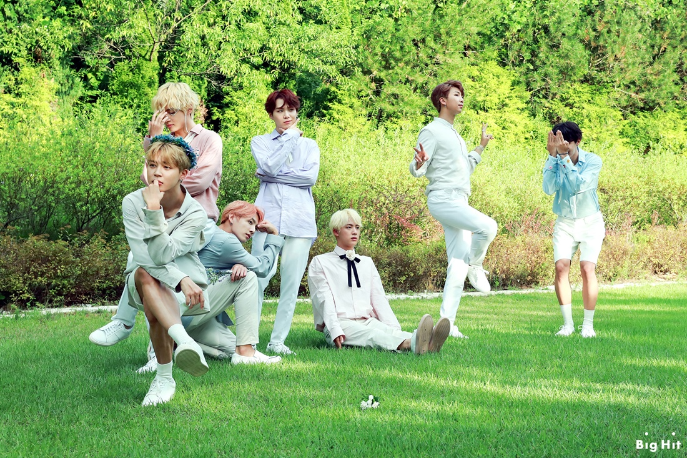

[정국] I'm a born singer 좀 늦어버린 고백 (I swear)
[柾国] I'm a born singer 有点晚了的告白 (I swear)
언제나 멀기만 했었던 신기루가 눈 앞에 있어 (여기 있어)
一直离我很远的海市蜃楼就在我眼前(就在这里)
[뷔] I'm a born singer 어쩌면 이른 고백
[V] I'm a born singer 也许是过早的告白
그래도 너무 행복해 I'm good
但是我仍然很幸福 I'm good
[슈가] 난생 처음 방탄이란 이름으로 선 무대
[SUGA] 平生第一次以防弹这个名字站上的舞台
삼년 전 첫무대의 마음을 다시 검문해
再次盘问我的心三年前的第一个舞台
여전히 대구 촌놈 랩퍼와 다를게 없었지 but
仍然和大邱土包子rapper没有什么区别 but
아마추어란 단어 위에 프로란 단어를 덧 썼지
只不过在amateur的单词上添了一个pro的单词
그토록 원하던 무대 랩을 하며 춤 출때
那么想要的舞台,说着rap跳着舞的时候
아직 살아 있음을 느껴 피곤하고 고된 출퇴근
仍然能感觉到还活着 疲劳又艰苦的上下班
따위는 견딜만해 내사람들이 지켜보니까
这种的还能忍受 因为我的人们在看着我
몸이 아파도 버틸만해 함성들이 밀려 오니까
身体不舒服也能忍受 因为尖叫声正在涌上来
데뷔 전후의 차의점 아이돌과 랩퍼 사이 경계에
出道前后的不同点 在idol和rapper之间的境界上
살아도 여전히 내 공책엔 라임이 차있어
活着 我的本上还是写满着lime
대기실과 무대 사이에선 펜을 들고 가사를 써
在待机室和舞台之间我拿着笔在写歌词
이런 내가 니들 눈에는 뭐가 달라졌어?
这样的我在你们眼里有什么变化?
Damn shit 난 여전해
Damn shit 我依旧没变
내가 변했다고? (what?) 가서 전해
说我变了?去告诉他们
변함없이 본질을 지켜 I'm still rapperman
不变地守着本质 I'm still rapperman
3년전과 다름없이 랩하고 노래해 I'm out
和3年前一样我还是说着rap唱着歌

[정국] I'm a born singer 좀 늦어버린 고백 (I swear)
[柾国] I'm a born singer 有点晚了的告白 (I swear)
언제나 멀기만 했었던 신기루가 눈 앞에 있어 (여기 있어)
一直离我很远的海市蜃楼就在我眼前(就在这里)
[진] I'm a born singer 어쩌면 이른 고백
[Jin] I'm a born singer 也许是过早的告白
그래도 너무 행복해 I'm good
但是我仍然很幸福 I'm good
[랩몬스터] 솔직해 두려웠었어 큰 소린 쳐놨는데 날 증명한다는게
[Rap Monster] 说实话我害怕过 我吹牛过要证明我自己
펜과 책만 알던 애가 이제 세상을 놀래킨다는게 I dunno
过去只知道笔和书的我现在要去让整个世界受到惊吓 I dunno
세상의 기대치와 너무 비대칭 할까봐 두려웠어
怕和世界的期待值不对称
나를 믿어줬던 모든 사람들을 배신하게 될까봐
怕背叛了相信我的人们
무건운 어께를 펴고 첫 무대에 올라
所以舒展肩膀站上第一个舞台
차나의 짧은 정적 숨을 골라
刹那的寂静,然后顺气
내가 지켜봤던 사람들이 이젠 날 지켜보고 있네
我关注着的人们现在在关注着我
항상 올려봤던 TV속 그들이 지금은 내 밑에
一直在TV里的他们现在在底下
Uh 주마등처럼 스칠 틈도 없이 한번뿐인 연극은 시작 돼버렸지
没有掠过走马灯的时间 只有一次的话剧已经开始了
3번만에 증발한 내 3년의 피땀 피터지는 마이크와의 기싸움
3分钟就蒸发掉的我的3年的血汗 和麦克风的较量
몇십초일 뿐이었지만 똑똑히 쏟아내 I'm fucking real
只有几十秒但是我清晰地说出来 I'm fucking real
야임마 니 꿈은 뭐야 나는 랩스터가 돠는 거야 can't you feel
喂 小子 你的梦想是什么 我是成为rap star can't you feel
그리고 내려온 순간 그 함성 yeah I could read your mind (uh yeah)
还有下台的瞬间爆发的喊声 yeah I could read your mind (uh yeah)
I could read your mind 물을표 내신 미소만
I could read your mind 代替问号的只有微笑
말없이 멤버들은 그저 내 어깨를 두드렸어
成员们一句话不说只是拍了拍我的肩膀
꼭 엊그제같은데 스무 밤이 흘려버렸어
就像是在昨天一样 但是已经过了20个晚上
And let the haters on me 걔네가 늘상 해온 일
And let the haters on me 他们一直在做的事
니네가 키보드 놀릴동안 난 내 꿈들을 채웠지
你们在敲打着键盘的时候我在填满我的梦想
썬글라스 hairstyle 왜 욕하는지 알아
墨镜 hairstyle 我知道为什么在骂
어쨌든 스무살에 너보다 잘나가는 나야
总之是比你强的20岁的我
[뷔] I'm a born singer 좀 늦어버린 고백 (I swear)
[V] I'm a born singer 有点晚了的告白 (I swear)
언제나 멀기만 했었던 신기루가 눈 앞에 있어 (여기 있어)
一直离我很远的海市蜃楼就在我眼前(就在这里)
[지민] I'm a born singer 어쩌면 이른 고백
[Jimin] I'm a born singer 也许是过早的告白
그래도 너무 행복해 I'm good
但是我仍然很幸福 I'm good

[제이홉] 우리가 뛰었던 날 우리 같이 겪었던 날
[J-hope] 我们一起跑的日子 我们一起经历的日子
3년이란 시간 모두 하나가 됐던 마음
3年的时间 成为一体的我们的心
그렇게 흘린 피땀이 날 적시네
流的血汗就这样把我弄湿
무대가 끝난 뒤 눈물이 번지네
舞台结束后眼泪就蔓延
매순간 마다 자신에게 다짐해 초심을 잃지 않게
每个瞬间都会对自己下决心 不要失去初心
한산 나담게 처음의 나에게 부끄럽지 않게
一直要像我自己 不要对不起当初的我
So we go we go we go
더 위로 위로 위로
要向上向上向上
[All] I'm a born singer 좀 늦어버린 고백 (I swear)
[All] I'm a born singer 有点晚了的告白 (I swear)
언제나 멀기만 했었던 신기루가 눈 앞에 있어 (여기 있어)
一直离我很远的海市蜃楼就在我眼前 (就在这里)
I'm a born singer 어쩌면 이른 고백
I'm a born singer 也许是过早的告白
그래도 너무 행복해 I'm good
但是我仍然很幸福 I'm good